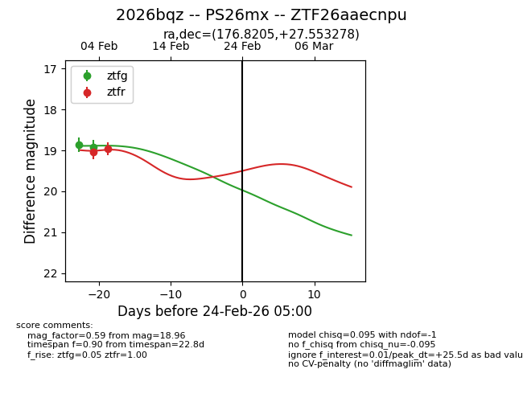
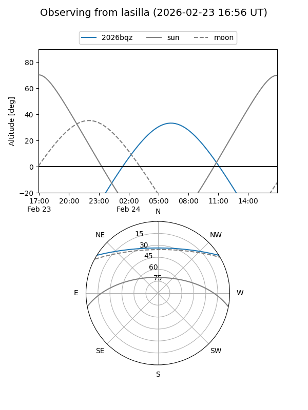
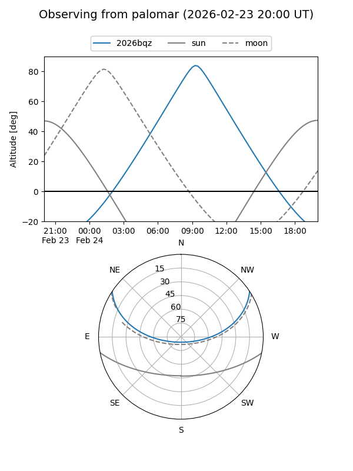

2026bqz
Target 2026bqz at 2026-02-24 09:08
Aliases and brokers:
FINK: link
Lasair: link
ALeRCE: link
TNS: link
YSE: link
alt names
ZTF26aaecnpu (ztf,fink_ztf)
2026bqz (tns,yse)
PS26mx (panstarrs)
Coordinates:
equatorial (ra, dec) = 176.8205,+27.55328
equatorial (HMS+DMS) = 11:47:16.91,+27:33:11.80
galactic (l, b) = (207.5320,+75.75629)
Flags:
Photometry:
last ztfg=18.91, ztfr=18.96
2 ztfg, 2 ztfr detections
Lightcurve

Visibility


Additional plots